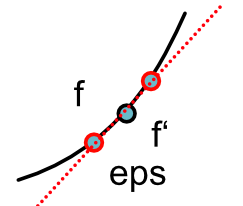

Derivatives¶
Let us begin by discussing derivatives in the setting of programming. We assume that you have not seen derivatives in a while so we will start slow and develop some notation. (
If we are given a function,
We can compute a function for its derivative applying rules from univariate calculus. We will use the Lagrange notation where the derivative of a one-argument function \(f'\) is denoted \(f'\) i.e.
When working with two argument functions, for example,
We use subscripts to indicate which arguments a derivative applies to,
We will refer to these as the symbolic derivatives of the function. When available symbolic derivatives are ideal. They tells us everything we need to know about the derivative of the function.
Visually, derivative functions correspond to tangeant lines. If we start with a function of the form,
Then its derivative is the slope of the tangeant line.
This visual representation informally motivates an alternative approach to compute a numerical derivative. Recall one definition of the derivative is this slope as we approach as tangent line.
\[f'(x) = \lim_{\epsilon \rightarrow 0} \frac{f(x + \epsilon) - f(x)}{\epsilon}\]
This means that if we set \(epsilon\) to be very small constant, it gives an approximation of the derivative.
\[f'(x) \approx \frac{f(x + \epsilon) - f(x)}{\epsilon}\]
Alternatively you could imagine approaching x from the other side, which would yield a different approximation.
\[f'(x) = \lim_{\epsilon \rightarrow 0} \frac{f(x) - f(x- \epsilon)}{\epsilon}\]
You can show that doing both simultaneously yields the best approximation (You probably proved this in high school!). This is known as the central difference.
\[f'(x) \approx \frac{f(x + \epsilon) - f(x-\epsilon)}{2\epsilon}\]
See a complete description of the method.
The key benefit of the numerical approach is that we do not need to know anything about the function, all we need to do is to compute its value under a given input. From a programming sense, this means we can approximate the derivative for any black-box function.
In implementation this means we can write a higher-order function of the following form
def approx_derivative(f, x):
...
Assume we are just given an arbitrary python function
def f(x):
"Compute some unknown function of x."
...
We can then call central difference to immediately approximate the derivative of the function.
We will see that this approach is not a great way to train machine learning models, but that it will provides a generic alternative approach to check that derivative functions are correct, in effect free Property Testing.